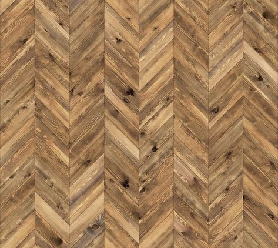

For the furniture in the living room, I wanted to create a modern finish while keeping
a homey feel. I felt that while using white funiture with warm toned woods, I would be able to create
the middle ground that I desired.
Kitchen
For the kitchen, I plan to use these images as inspiration for the design. These images showcase a modern, sleek design
while keeping the warm tones that will be scattered throughout the interiors.
Bedroom
For the bedroom, I will incorporate greens, salmons, and golden yellows to create the warm effect wile using
dark woods, whites, and greys to allude to the class in the design. The white bedframe allows for colors to
shine out brightly on the bedspread while keeping a plain look to the bed.

Materials
These are a few of the materials I plan on using in my final design. I plan on using an angled wood to add a
playful look to the design and a white tile in the kitchen to tie together the style.
The colored walls will add a playful warm tone and accent the neutral colors.
Artwork
Artwork in interior spaces always polishes designs in a way that not many other things can do. These images
showcase a sophisticated boho style that incorporate colors in a way that remains classy while adding playful
elements to the room.